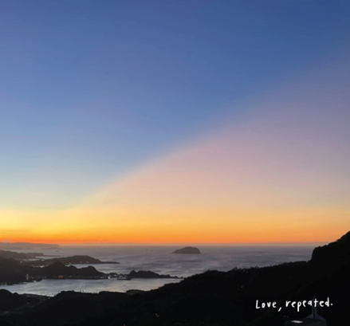

Home Page – Finding Everyday Miracles
This website introduces the idea of everyday miracles and encourages visitors to notice meaningful moments in their daily lives. It highlights how small experiences like a kind gesture, a beautiful sunset, or a quiet moment can bring joy, warmth, and a sense of wonder.
Why Everyday Miracles Matter
Everyday miracles are the small but meaningful moments that bring beauty, joy, and peace into daily life. They may not seem big at first, but they can leave a strong impact on the way we think and feel. A smile from a stranger, support from a friend, or a peaceful morning sky can remind us that life is still full of good things.
Many people are busy with school, work, and daily responsibilities, so it is easy to miss these special moments. This website is meant to help visitors slow down, reflect, and appreciate the wonder that can be found in ordinary life.
Story of Here
The purpose of this site is to share simple stories, peaceful reflections, and meaningful examples that help people notice beauty in normal days. Sometimes miracles are not loud or dramatic. Sometimes they are found in quiet moments, acts of kindness, nature, and gratitude.
Miracles Pictures
Nature often gives us moments of peace and wonder. A single cloud, soft light, or a calm sky can remind us to pause and notice beauty around us.
Sunsets are a simple example of an everyday miracle. They happen often, but each one is different and can bring a sense of calm, reflection, and joy.

Open skies and peaceful landscapes can help people feel thankful for the small blessings in life. Even ordinary scenes can hold extraordinary meaning.
Everyday miracles can be found in many places. They can appear in nature, in relationships, and in quiet moments that help us feel hope and gratitude.
Simple Reflection
This site encourages visitors to reflect on the good around them each day. Through stories, thoughtful examples, and peaceful images, the goal is to inspire gratitude and help people see that ordinary life can still hold extraordinary meaning.